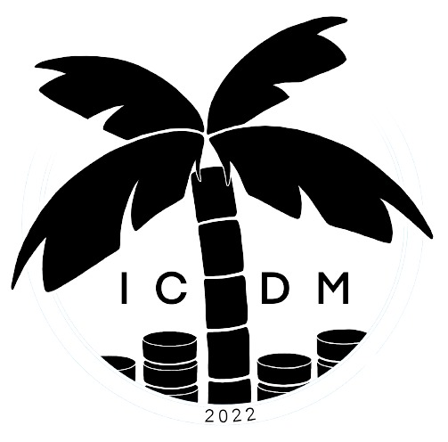

ICAIS & ISAS Session on Machine Learning and Its Applications

This session aims to provide a platform for researchers and engineers from machine learning, automation-intelligence to communicate the development of machine learning theory and their applications especially related to automation-intelligence.
Although multi-view representation learning has gained great progress, there are still some open problems that requires further investigation. For instance, most existing multi-view representation learning methods can not deal with missing values and unaligned views directly. Big data era calls for efficient multi-view representation learning methods. Deep multi-view representation learning methods have huge parameters to tune and lack interpretability. Compared with other machine learning tasks like classification, multi-view representation learning does not have a clear criterion or good evaluation. All these problems call for novel multi-view representation learning theory and algorithms.
-
Topics of interest will be focused on, but not limited to:
- Supervised and unsupervised learning methods (including classification, regression, clustering, representation learning, etc.)
- Semi-supervised learning, Ensemble methods, Multi-view learning, Multi-task learning, Multi-source learning, Multi-label learning, Multi-instance learning, Transfer learning,
- Generative model (Variational autoencoder, Generative Adversarial Network, Diffusion Models), Deep learning methods (Convolutional Neural Network, Graph Neural Networks, Long Short-Term Memory, Transformer)
- Natural language processing (GPT, question answering, machine translation)
- Computer vision(Human Activity Recognition, Human Pose Estimation, Object detection, Image Segmentation)
- Speech processing and Multi-modal learning
Submission information: We invite both full papers (max 8 pages) describing mature work and short papers (max 5-6 pages) describing work-in-progress or case studies. Only original and high-quality papers formatted using the IEEE2-column format (Latex Template), including the bibliography and any possible appendices will be considered for reviewing. Paper submission site is at https://wi-lab.com/cyberchair/2022/icdm22/scripts/ws_submit.php?subarea=S.
Important dates:
- September 17, 2022: Workshop papers submission
- October 8, 2022: Notification of workshop papers acceptance to authors
- October 10, 2022: Camera-ready deadline and copyright form
- October 10, 2022: Early bird registration finishes
- November 28-December 1, 2022: Workshops date All dates are 11:59pm Pacific Daylight Time.
Workshop MRL Program:
Workshop Chair:
- Shiliang Sun, Department of Automation, Shanghai Jiao Tong University
- Guoqing Chao, Schoolof Computer Science and Technology, Harbin Institute of Technology
- Xijiong Xie, School of Information Science and Engineering, Ningbo University